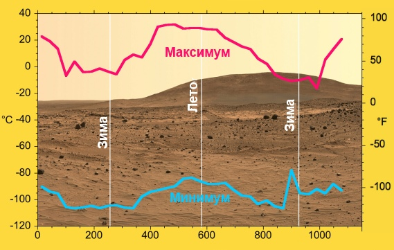
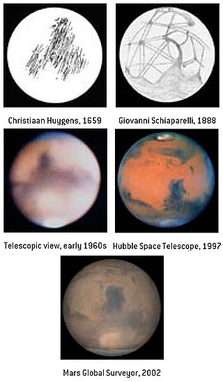
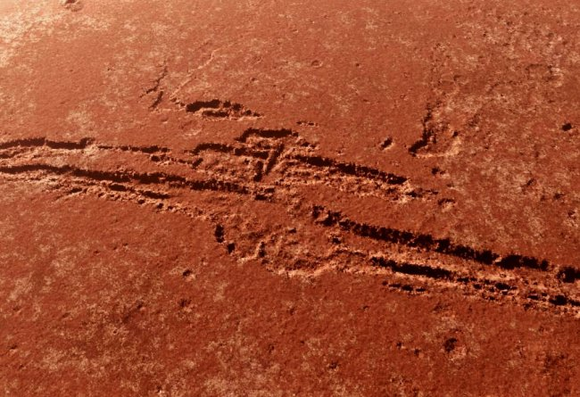

Марс — четвёртая по удалённости от Солнца и седьмая по размерам планета Солнечной системы; масса планеты составляет 10,7% массы Земли.Названа в честь Марса — древнеримского бога войны, соответствующего древнегреческому Аресу. Иногда Марс называют «красной планетой» из-за красноватого оттенка поверхности, придаваемого ей минералом маггемитом — γ-оксидом железа(III). Марс — планета земной группы с разреженной атмосферой (давление у поверхности в 160 раз меньше земного).Особенностями поверхностного рельефа Марса можно считать ударные кратеры наподобие лунных, а также вулканы, долины, пустыни и полярные ледниковые шапки наподобие земных.
Площадь поверхности Марса равна 144 млн км2 (28,3% площади поверхности Земли) и приблизительно равна площади суши на Земле.
Период вращения планеты — 24 часа 37 минут 22,7 секунды (относительно звёзд), длина средних марсианских солнечных суток составляет 24 часа 39 минут 35,24409 секунды, всего на 2,7 % длиннее земных суток. Для удобства марсианские сутки именуют «солами». Марсианский год равен 668,59 сола, что составляет 686,98 земных суток
0,4—0,87 кПа
:95,32 % углекислый газ[2] 2,7 % азот 1,6 % аргон 0,145 % кислород 0,08 % угарный газ 0,021 % водяной пар 0,01 % окись азота
186 К; −87 °C 210 K (−63 °C) 268 sК; −5 °C
Первые наблюдения Марса проводились до изобретения телескопа. Это были позиционные наблюдения с целью определения положений планеты по отношению к звёздам. Существование Марса как блуждающего объекта в ночном небе было письменно засвидетельствовано древнеегипетскими астрономами в 1534 году до н. э.
1. Название планеты произошло от имени бога войны у римлян в связи с тем, что цвет Марса очень похож на кровь. Второе название Марса — Красная планета. Ученые выдвинули гипотезу, что такой цвет вызван присутствием в атмосфере планеты большого количества оксидов железа.
2. На поверхности Марса находится каньон «Долина Меринера», который во много раз длиннее и глубже Большого Каньона в северной Америке.
3. На Марсе существуют горы на много выше Эвереста, а гора Олимп является в настоящее время самой высокой горой в Солнечной системе, известной человечеству.
Вверх| Главная | Венера | Земля | Марс | Юпитер | Сатурн | Уран | Нептун |
|---|